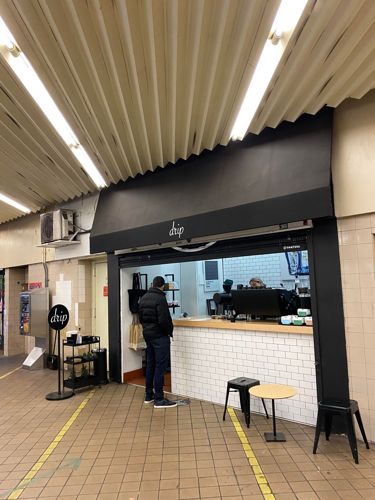

Rohil PrasadEmail: rrprasad[symbol]berkeley.edu I am a mathematician working as a Miller Research Fellow at UC Berkeley. My research interests include dynamical systems, symplectic geometry, and gauge theory. I got my PhD in May 2023 from Princeton, advised by Helmut Hofer. |
 |